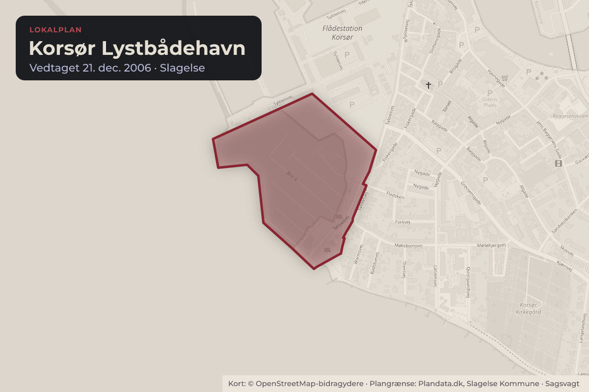
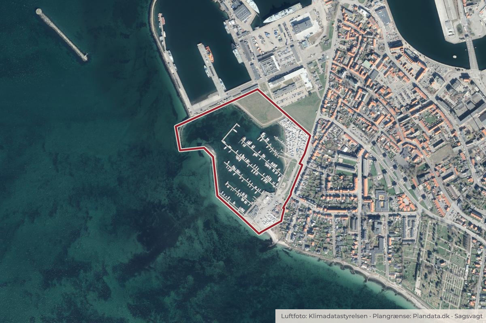

Besluttet 1. september, Erhvervs-, Udviklings- og Landdistriktsudvalget, Slagelse
Anmodning om opstart af ny lokalplan for Korsør Lystbådehavn (B)
Byggeri og lokalplanerErhverv og job

Kort: © OpenStreetMap-bidragydere. Plangrænse: Plandata.dk, Slagelse Kommune.

Kort fortalt
- Forslaget
- Erhvervs-, Udviklings- og Landdistriktsudvalget beslutter, at lokalplanen med et tilhørende
- Hvem
- Erhvervs-, Udviklings- og Landdistriktsudvalget, Slagelse Kommune
- Hvornår
- Tirsdag 1. september 2026
- Status
- Besluttet. At 1: Godkendt.
Er noget forkert her? Skriv til os
Læs hele sagen Kommunens egen tekst
Sagsfremstilling
Kompetence
Erhvervs-, Udviklings- og Landdistriktsudvalget
Beslutningstema
Erhvervs-, Udviklings- og Landdistriktsudvalget kan beslutte, om en lokalplan med tilhørende
kommuneplantillæg for Korsør Lystbådehavn skal sættes i gang.
Korsør Lystbådehavn har behov for at inddæmme areal på søterritoriet til brug for
vinteropbevaring af både. Dette kræver en ændring af den gældende lokalplan. Derudover
ønsker Korsør Lystbådehavn at få opdateret lokalplanen så den svarer til områdets faktiske
forhold og kan rumme lystbådehavnens ønsker til udvikling af havnen.
Indstilling
Chefen for Teknik, Plan og Erhverv indstiller,
1. at Erhvervs-, Udviklings- og Landdistriktsudvalget beslutter, at lokalplanen med et tilhørende
kommuneplantillæg sættes i gang.
Sagens indhold
Korsør Lystbådehavn A.m.b.a. anmoder om udarbejdelse af en ny lokalplan for
lystbådehavnen, der skal erstatte den gældende Lokalplan 127, Korsør Lystbådehavn.
Lokalplanen ønskes opdateret som konsekvens af at lystbådehavnen ikke længere kan benytte
flådestationens areal til vinteropbevaring af både. Der er derfor behov for at inddæmme et
mindre areal på søterritoriet til vinteropbevaring.
Inddæmning af areal på søterritoriet kan ikke rummes indenfor den gældende lokalplan. Der skal derfor tilvejebringes en
ny lokalplan for lystbådehavnen. Samtidig ønsker Korsør Lystbådehavn, at lokalplanen er tidssvarende og kan rumme
driften og udviklingen af en almindelig lystbådehavn.
Lokalplanen ønskes således tilpasset i forhold til bådopstilling på land, højde på diverse anlæg, udvidelse af legeplads og
lystbådehavnens generelle udvikling. I forbindelse med dialog med lystbådehavnen er der f.eks. ytret ønske om etablering
af en promenadebro langs med den sydlige mole ud mod Storebælt.
Vejbetjeningen af Korsør Lystbådehavn vil fortsat ske via eksisterende overkørsel til Sylowsvej.
Lokalplanlægningen kræver udarbejdelse af et kommuneplantillæg, da havnens udstrækning ikke er fuldstændigt dækket
af den gældende kommuneplanramme 2.1R2 Korsør Lystbådehavn. Samtidig bør der ske en justering af afgrænsningen
mellem Kommuneplanramme 2.1R2 og L.M7 Flådestation Korsør.
I forbindelse med en evt. lokalplanlægning for Korsør Lystbådehavn er der en række opmærksomhedspunkter der skal
håndteres: Kystnærhedszonen, Klimazonen (oversvømmelse, erosion og den statslige risikoudpegning for
oversvømmelse), afklaring af forhold omkring privat fællesvej der betjener Flådestationen henover det nuværende areal til
vinteropbevaring af både og forholdet omkring inddæmning af areal på søterritoriet.
Erhvervs-, Udviklings- og Landdistriktsudvalget kan vælge at imødekomme lokalplananmodningen. Derved vil der kunne
igangsættes en lokalplanlægning der sikrer inddæmning af areal på søterritoriet til vinteropbevaring af både samt en
generel opdatering af plangrundlaget.
Administrationen anbefaler, at lokalplanlægningen igangsættes så plangrundlaget for Korsør Lystbådehavn opdateres og
kan rumme de udviklingsønsker lystbådehavnen har, herunder at inddæmme et mindre areal på søterritoriet.
Erhvervs-, Udviklings- og Landdistriktsudvalget kan også vælge ikke at imødekomme lokalplananmodningen. Det vil
betyde, at den gældende Lokalplan 127 fastholdes og der vil ikke kunne inddæmmes areal på søterritoriet.
Retligt grundlag
Kommuneplantillæg udarbejdes i henhold til planlovens § 23c.
Lokalplaner tilvejebringes i henhold til planlovens kapitel 5.
Økonomiske og personalemæssige konsekvenser
Ingen bemærkninger.
Tværgående konsekvenser
Ingen bemærkninger.
Sagens videre forløb
Hvis lokalplanlægningen igangsættes, vil Erhvervs-, Udviklings- og Landdistriktsudvalget på et
senere møde blive forelagt et forslag til lokalplan og kommuneplantillæg med henblik på
beslutning om fremlæggelse af planforslaget i offentlig høring.
Beslutning
At 1: Godkendt.
Kilde: Slagelse Kommune, Erhvervs-, Udviklings- og Landdistriktsudvalget, referat fra mødet tirsdag 1. september 2026, punkt 5. Læs den originale sag hos kommunen.